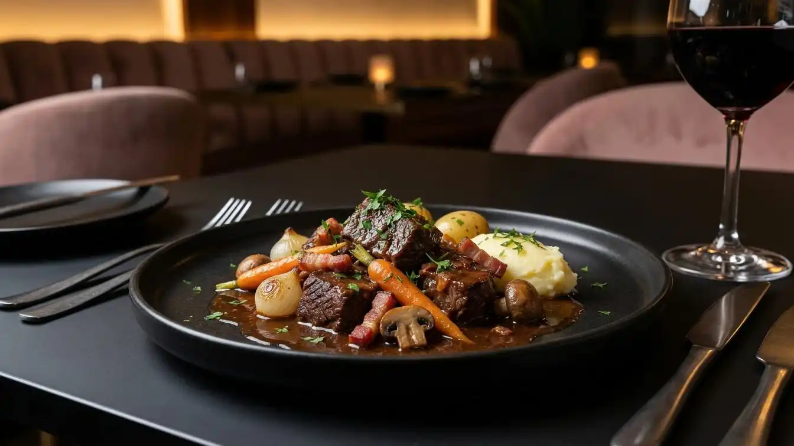

Morceaux de cheval mijotés longuement au vin rouge, champignons de Paris, oignons grelots et lardons fumés.
- Viande
- Cheval
- Accompagnement
- Pommes de terre vapeur ou tagliatelles

20,00 €
Morceaux de cheval mijotés longuement au vin rouge, champignons de Paris, oignons grelots et lardons fumés.